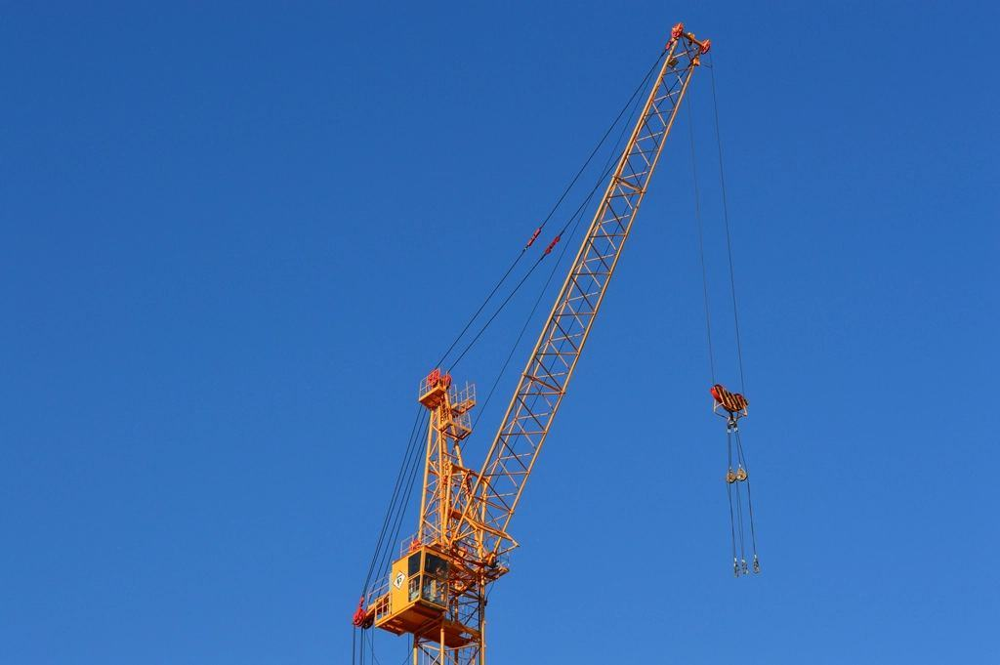

Referenser
Ett urval av uppdrag vi har utfört.
- 2026

Bjurtjärnsvägen
1,4 kilometer självfallsledning och tolv nya servisanslutningar åt kommunen.
- 2025

Varnums Sågverk
Två lastare på timmerplanen i treskift under hela höstsäsongen.
- 2025

Rudskoga Lantbruk
Sex kilometer öppna diken rensade och 14 vägtrummor bytta på en vecka.
- 2025

Brf Kanalparken
Tolv balkongplattor lyfta på plats från kranbil på en förmiddag.
- 2024

Ölme vägsamfällighet
Fyra kilometer enskild väg harvad, dikad och grusad med 0–16 bärlager.
- 2026

Industrihus vid Presterud
Schakt och packning för en verkstadshall på 900 kvadratmeter.
Kunder som ringt i åratal
Lars-Erik N. · Rudskoga”Vi beställde en grävare på tisdag eftermiddag och klockan sju på onsdagen stod den på gården med en förare som visste var vattenledningen gick.”
Maria S. · Kristinehamn”Kranbilen lyfte tolv balkongplattor på en förmiddag. Chauffören hade tittat på platsen veckan innan och visste exakt var bilen skulle stå.”
Peter H. · Storfors”Vi har haft ramavtal i åtta år. Samma förare, samma timpris hela året och följesedlar som alltid stämmer.”